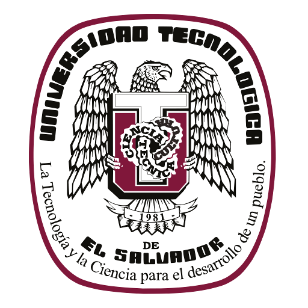

 Tema:Primer sitio web Asignatura:Desarrollo de plataformas web Seccion:01 Docente:Ing. Tomas Eduardo Urbina Integrantes: Amilcar Antonio Henriquez - 2547192017 Marta Julia Vasquez Campos - 2547192017 Fecha de entrega:20 de feb 2020